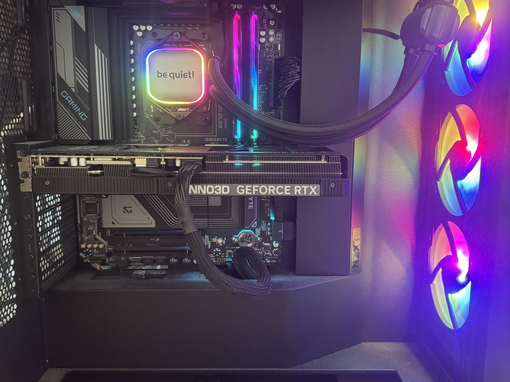
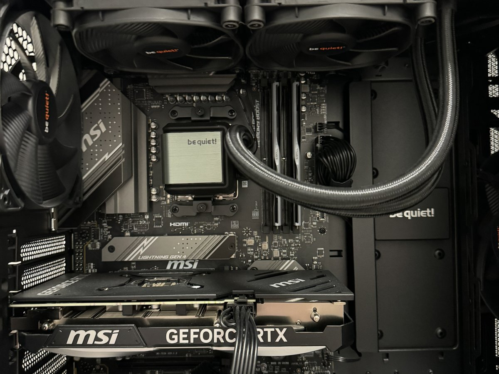
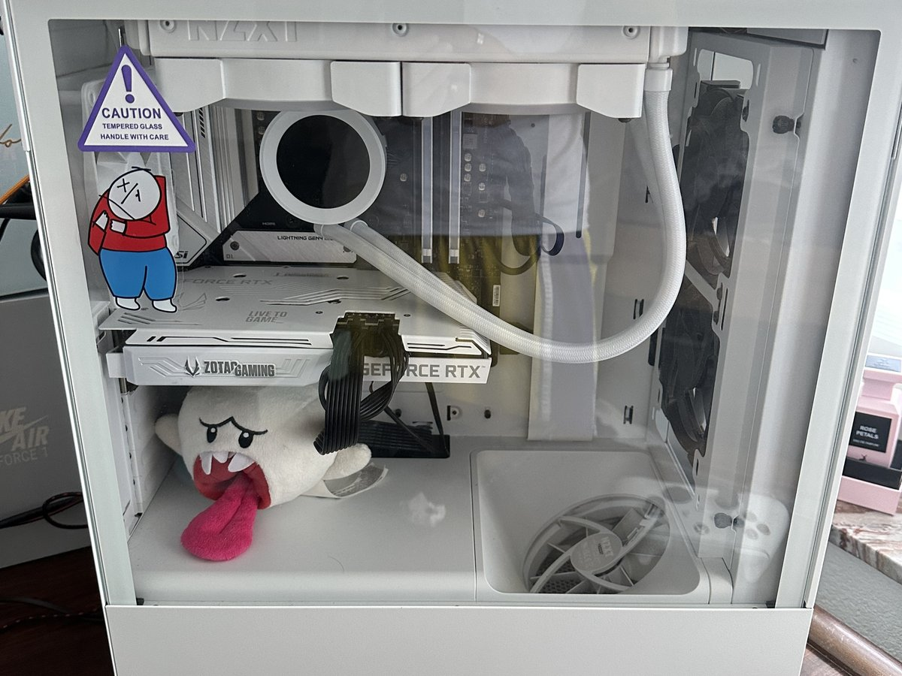

// fachinformatiker · anwendungsentwicklung
Ich programmiere
noch nicht perfekt.
Aber ich will es lernen —
und ich beweise es.
2. Lehrjahr Fachinformatiker für Anwendungsentwicklung, auf der Suche nach einem Betrieb, der mir die Chance gibt, weiterzumachen.
// 01 — ueber-mich.md
Kurz zu mir
Ich bin Halil, 21 Jahre alt, aus Bad Wildungen. Aktuell bin ich im zweiten Lehrjahr zum Fachinformatiker für Anwendungsentwicklung — mein bisheriger Ausbildungsbetrieb konnte das Verhältnis aus wirtschaftlichen Gründen nicht fortsetzen, weshalb ich gerade nach einem neuen Betrieb suche, um dort weiterzumachen, wo ich aufgehört habe.
Ich bin niemand, der von sich behauptet, alles zu können. Ich kann noch nicht perfekt programmieren — aber ich habe im ersten Lehrjahr echte Praxis gesammelt: in einem Scrum-Team gearbeitet, Frontend-Tickets umgesetzt und bei einer Infrastruktur-Migration mitgeholfen. Was ich aus dieser Zeit vor allem mitnehme: Ich muss früher und öfter nachfragen, statt Dinge stillschweigend selbst zu interpretieren. Das ist eine Lektion, die ich ernst nehme.
Was mich antreibt, ist echte Neugier für Technik — die reicht deutlich weiter zurück als meine Ausbildung.
// 02 — praxis.log
Was ich im echten Betrieb gemacht habe
Auch wenn meine Ausbildung unterbrochen wurde, war das erste Lehrjahr keine verlorene Zeit.
-
a3f9c1
Agile Teamarbeit
Von Anfang an im Scrum-Team meines Betriebs eingebunden — Sprints, Dailies, Retros waren für mich von Tag eins Alltag, nicht Theorie.
-
7be420
Frontend-Arbeit
Erste eigene Tickets umgesetzt, von kleinen pixelgenauen Anpassungen bis zu eigenständigen UI-Aufgaben.
-
c02de8
Infrastruktur
Bei der Migration eines Projekts von Kubernetes auf eine einfachere Docker-Compose-Lösung mitgearbeitet.
-
f19a76
Vertiefung im Selbststudium
Das Buch „Design Patterns von Kopf bis Fuß" komplett durchgearbeitet, parallel zur Arbeit im Team.
-
9d5e33
Stärke im Debugging
Fehler in bestehendem Code zu finden liegt mir mehr als druckreifer Code aus dem Nichts — eine Fähigkeit, die im Berufsalltag oft unterschätzt wird.
// 03 — skills.json
Womit ich bereits gearbeitet habe
Sprachen & Frameworks
Tools & Infrastruktur
Methodik
Sprachen
Ich bin noch am Anfang meiner technischen Reise und würde mich nicht als erfahrenen Entwickler bezeichnen. Woran ich aber gerne arbeite und worin ich schon jetzt gut bin: bestehenden Code lesen, Fehler finden und verstehen, warum etwas nicht funktioniert.
// 04 — motivation.txt
Warum Anwendungsentwicklung
Meine Liebe zu Computern begann, als ich acht war. Wir hatten einen Laptop, der zu langsam war, um die Spiele zu spielen, die ich spielen wollte — also habe ich angefangen, an ihm herumzuschrauben und ihn mit Software zu optimieren. Mit 13 habe ich in einer Pizzeria gearbeitet, um mir meinen ersten eigenen PC zu finanzieren, die Komponenten einzeln bestellt und ihn selbst zusammengebaut. Seitdem baue ich immer wieder neue PCs, verkaufe die alten und fange von vorne an.
Eigentlich wollte ich Systemintegrator werden. Dass ich stattdessen als Anwendungsentwickler angenommen wurde, war zunächst Zufall — aber mir wurde schnell klar, dass mich genau das reizt: Anwendungsentwicklung geht tiefer in die Materie. Man versteht, wie die Software funktioniert, die diese Welt im Hintergrund am Laufen hält. Ich bin nicht der talentierteste Programmierer, aber die Arbeit macht mir wirklich Spaß — und das ist für mich die Grundlage, auf der alles andere aufbaut.
// 05 — freizeit.md
Was mich sonst noch ausmacht
Technik hört bei mir nicht mit Feierabend auf. Ich modde bis heute Nintendo- und PlayStation-Konsolen (Homebrew, Custom Firmware) und baue seit Jahren eigene PCs — von der Komponentenauswahl bis zum sauberen Kabelmanagement.



Neben dem Rechner hält mich vor allem Bewegung im Gleichgewicht: Ich gehe regelmäßig ins Fitnessstudio und wandere gerne in der Natur. Und wenn es mal nicht ums Schrauben oder Trainieren geht, treffe ich mich mit Freunden oder zocke eine Runde.
// 06 — kontakt.sh
Lass uns sprechen
Ich suche einen Ausbildungsbetrieb im Umkreis Bad Wildungen / Kassel, in dem ich mein zweites Lehrjahr als Fachinformatiker für Anwendungsentwicklung fortsetzen kann — idealerweise mit einem Gespräch noch im Juli.